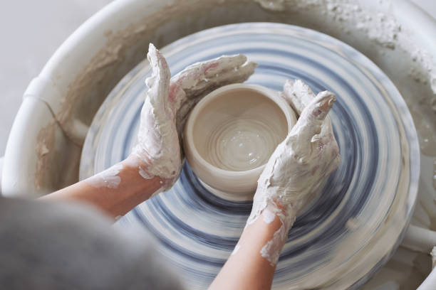

С чего начинается работа
Создание керамического изделия начинается с подготовки материала. Глина должна иметь подходящую влажность и однородную структуру. Перед формованием из неё удаляют лишний воздух и тщательно разминают массу.

Инструменты гончара
Для создания простых изделий используются разные инструменты. Их выбор зависит от формы предмета и техники работы.
- гончарный круг для формования вращающейся глины;
- струна для отделения изделия от рабочей поверхности;
- деревянные и металлические стеки для обработки формы;
- губки для увлажнения и сглаживания поверхности;
- кисти и глазури для декоративной отделки.
На занятиях начинающие знакомятся с инструментами постепенно, соблюдая рекомендации преподавателя.
Пять основных этапов
- Подготовка глины. Материал разминают и доводят до подходящей консистенции.
- Формование. Изделие создают на гончарном круге или вручную.
- Сушка. Изделие постепенно теряет влагу. Слишком быстрое высыхание может привести к трещинам.
- Обжиг. Высушенную керамику обрабатывают в специальной печи при подходящей температуре.
- Декорирование. При необходимости наносят глазурь и проводят дополнительный обжиг.
Сколько времени занимает изготовление
Продолжительность каждого этапа зависит от размера изделия, состава глины, толщины стенок и условий сушки.
| Этап | Что происходит | От чего зависит время |
|---|---|---|
| Подготовка | Разминание глины | Количество и состояние материала |
| Формование | Создание формы изделия | Сложность формы и опыт мастера |
| Сушка | Удаление влаги | Размер, толщина и влажность воздуха |
| Обжиг | Термическая обработка | Тип глины, температура и режим печи |
Срок изготовления готового изделия обычно превышает продолжительность одного мастер-класса: сушка и обжиг требуют дополнительного времени.
Термины гончарного дела
Обжиг — это нагрев изделия в печи для придания ему необходимых свойств.
Глазурь — специальное покрытие, которое после обжига может образовывать на поверхности керамики стекловидный слой.
В англоязычных материалах гончарный круг называется pottery wheel, а глина — clay.
Занятия в мастерской
Ближайший ознакомительный мастер-класс запланирован на . Актуальную дату необходимо подтвердить при записи.
В гончарном деле результат зависит не только от замысла, но и от внимания к материалу на каждом этапе.
Частые вопросы о процессе
Почему глиняное изделие может треснуть?
Причинами могут быть неравномерная толщина стенок, неправильное соединение деталей, неравномерная сушка или неподходящий режим обжига.
Зачем изделие обжигают?
Обжиг изменяет свойства глины и превращает высушенную заготовку в керамический материал. Температура зависит от состава глины и технологии.
Можно ли сделать изделие без гончарного круга?
Да. Миски, небольшие фигурки и другие предметы можно создавать вручную, используя лепку и формование из пластов глины.